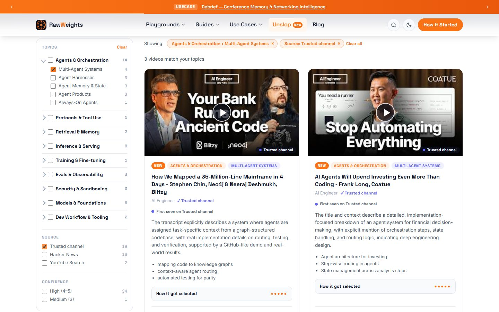
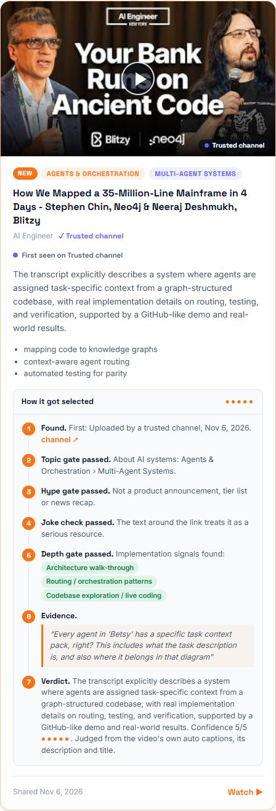
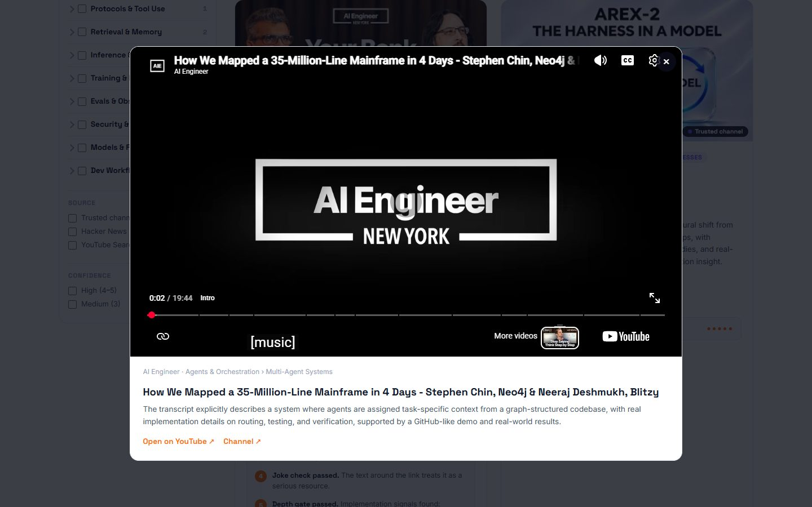
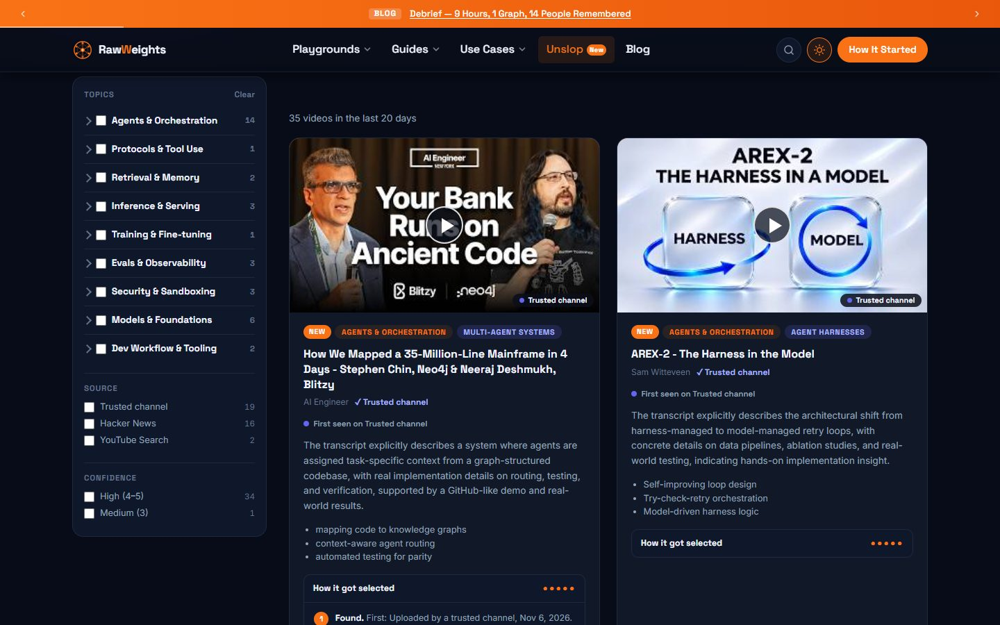

AI moves weekly. I couldn’t keep up, so I built a feed that rejects 93% of the noise
I wanted one short list of what’s actually new in AI and worth an hour of my time. Unslop is that list: hands-on videos from the last 20 days, each with the evidence it passed on. I use it daily. You can too.
Every week there is something new I am supposed to know
A new protocol. A new agent framework. A new way to serve models. The best explanations are usually on YouTube, buried between sponsor reads, reaction videos and “AI will change everything” talks. I kept losing evenings to the wrong ones.
I did not want a bigger list. I wanted a short daily list of what is new in AI and worth an hour, with a reason attached to each item. Nothing I could find did that for the part of AI I work on: the application layer, meaning agents, retrieval, tool protocols and serving.
So I built it for myself first. Then it occurred to me that anyone who builds with AI has the same problem, and that a feed you check every day is more useful when other people can check it too. That is why it is a public page and not a private script.
The rule I set myself: if a video makes the list, I should be able to point at the exact sentence that earned it a place.
How I used to find videos
Scroll YouTube, judge by thumbnail
Trust a title that promises “full course”
Lose an hour to a sponsor read
Never learn why something was recommended
What Unslop does instead
Collects what practitioners actually share
Reads the captions, not just the title
Drops hype, jokes and off-topic content
Shows the evidence behind every pick
Inspiration
Yes, I copied Andrej Karpathy. Here is what I changed.
On Oct 31, 2026 Andrej Karpathy published HackerTube, a YouTube-style site built from videos people recommend in Hacker News comments. As reported, it holds 6,454 videos from 2007 to 2026 across about 150 topics, put together with Claude in around two hours. I loved it, and I copied the idea on purpose.
Where we differ is time. His is a historic collection: the best of what people have recommended over almost two decades. I care about the opposite end. AI moves so fast that what happened this week matters more to me than what was good in 2014. So Unslop keeps the idea and flips the clock.
What we have in common
Start from what practitioners recommend, not what an algorithm pushesUse an LLM to filter at a scale a person can’tSmall, static, no loginSignal over view counts
Where they differ
HackerTube (Karpathy)
Unslop (this site)
Question it answers
What is worth watching, across everything people have recommended?
What is new in AI this week that is worth an hour?
Time span
2007 to 2026, about 6,454 videos (as reported)
Rolling last 20 days; older picks roll off
Topics
About 150 topics
One: the AI application layer
Where videos come from
Recommendations in Hacker News comments
Hacker News, Lobsters, trusted YouTube channels and YouTube search
Freshness
A snapshot collection, published Oct 31 (as reported)
Refreshed daily; dead links are removed
Selection
LLM-assisted filtering (as reported)
Four gates with a published rubric, plus a sample of the captions
Showing the work
A site to browse
Every card shows its evidence quote, confidence and where it was first seen
Staying in touch
Visit when you want to browse
RSS feed and a “New” badge, built for a daily habit
I know HackerTube from his post and press coverage, not from his code, so the left column is my reading of it, not his description. Reports: AI Weekly, FourWeekMBA. Unslop is an independent project and is not affiliated with him.
The problem
Why a filter: most AI video is not for people who build things
These numbers come live from the data behind the Unslop page, for the last 20 days.
–of videos considered made it through
loading…
The biggest bucket is not hype. It is off-topic: if you search a discussion site for YouTube links, most of them are music, politics and cooking. The second surprise was depth. Plenty of on-topic videos talk about agents without ever showing one working.
Filtering by view count would not help, because popular and useful are different things. I needed something that could read.
What it adds
A feed that shows its work

Topic, source and confidence facets on the left. Choices inside a group mean “or”, choices across groups mean “and”.
Evidence, not vibes
Each card opens a “How it got selected” panel: where the link was found, each gate, the quote that justified it, and a confidence score.
Reads the captions
When captions exist, the model sees a sample from the opening, middle and end. A technical title over a sponsor-read transcript fails.
Honest about origin
You see where a link was first seen, who shared it, and whether the channel is on my short trusted list.
Stays on the site
Videos play in a privacy-friendly player. If a video blocks embedding, the card says so and opens YouTube instead.

One card, fully opened. Every step is the model’s recorded reasoning.

Playing in the modal, with a link out if you want YouTube itself.

Light and dark follow the rest of RawWeights. There is also an RSS feed and a “New” badge on anything added in the last 48 hours.
For you
Five minutes a day, and you are caught up
The window is 20 days, so anything you miss slowly rolls off. That is on purpose: it keeps the list short and current.
1
Glance at what is new
Cards added in the last 48 hours carry a NEW badge. That is your daily list, usually a handful of videos.
2
Narrow to your corner
Pick the topics you care about. Add “Trusted channel” or “High confidence” when you only have time for the strongest picks.
3
Check the receipts
Open “How it got selected” before you press play. If the evidence quote does not convince you, skip it.
4
Let it come to you
Subscribe to the RSS feed in any reader, and you will not need to remember to visit.
Implementation
A script on my laptop, a static page on the web
No server, no database. A Python script writes one JSON file. The page reads it.
1 · Find
Four sources
Hacker News, Lobsters, a short list of trusted YouTube channels, and YouTube search.
2 · Free checks
Drop the obvious
Private, live, or under 8 minutes? Gone, before any model is paid for.
3 · Read
Captions + context
Transcript sample, description, and the lines around the link.
4 · Judge
Four gates
Topic, hype, joke, depth, in that order. First failure stops.
5 · Check
Grounding
The model’s quote must exist in what it was given, or confidence is capped.
6 · Write
One JSON file
Plus an RSS feed and search-engine markup, all regenerated each run.
7 · Verify
Link check
A second script removes videos that were deleted since.
8 · Show
Static page
Filters and cards render in the browser from the JSON.
Why local? I wanted to run it by hand for two weeks and read every pick before trusting it to a schedule. Keeping the scripts out of the public repo also means no API keys can leak into it.
Playground
Run the four gates on real videos
Pick a video. Watch it go through the same checks the script uses. These are real decisions from my runs, with the model’s own reasons.
Gate runner
Playground
How the filters combine
The same facet logic as the Unslop page, running on today’s real picks. Tick a few boxes and watch the list.
Filter lens
Trusted channel is a property of the video’s channel, not of how I found it. I got that wrong at first (see below).
Field notes
What broke, and what I changed
A joke made the list
A video was picked because a comment mocked an AI product’s tagline by linking a famous 1980 jeans ad. The title sounded relevant; the model only saw the link. The fix was to feed it the text just before and after the link, plus the comment being replied to, and add a joke gate.
My first version approved everything technical
A Nintendo 64 port, a Lisp compiler talk and an Electron memory essay all passed, because the original rubric said “deep” but never said “about AI”. A topic gate, placed first, fixed it.
The model invented function names
An early card listed tools like libdragon_init() that nobody ever said. I deleted that feature and replaced it with a short “covers” list, plus a check that every quote really appears in the text the model was given.
Reddit said no
Reddit now requires approval for new API apps. I applied, and was turned down with a generic message. I switched to the YouTube Data API for discovery, and gained transcripts in the process, which made the quality noticeably better.
Every date said Nov 6
I was showing the day I found a video, not the day it was shared. Share dates now drive the 20-day window.
“Trusted channel” filtered the wrong thing
Karpathy’s “Let’s build GPT” vanished from the trusted filter because I had found it on Hacker News. The filter meant “found via my channel list” when it should mean “from a channel on my list”.
Embed-blocked is not broken
Three of the first six “unavailable” videos were fine; their owners had just disabled embedding. Those now stay in the feed and open on YouTube.
I show who shared it, but do not filter by it
The sharer’s name and Hacker News karma appear on the card. I did not make it a filter, because that would reward established accounts and bury newcomers.
Limits worth knowing: the model never watches the video, it reads a sample of the captions. It can still be wrong, which is why every card carries its confidence and its quote.
The goal is not more AI video. It is fewer videos, from this week, with receipts.
Rolling 20 days. Updated by hand while I tune it, so expect it to get better.